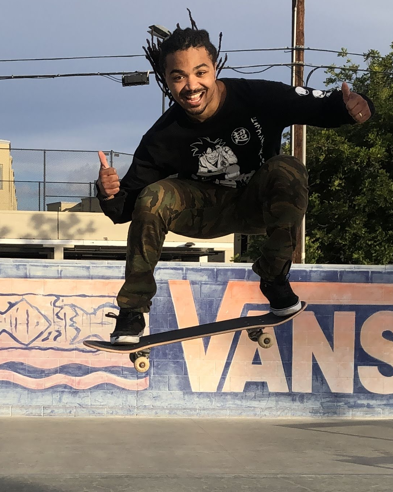

About me
“I... a universe of atoms, an atom in the universe.” ― Richard P. Feynman
Short bio: Dr. Devontae Baxter is a NSF Astronomy & Astrophysics and UC Chancellor's Postdoctoral Fellow at UC San Diego studying the impact of environment on galaxy formation and evolution. He did his undergraduate studies at Georgia Institute of Technology, majoring in Physics with a specialization in Astrophysics and minoring in Spanish. He did his graduate studies at UC Irvine under the supervision of Professor Michael Cooper, and his thesis work centered on merging machine learning, cosmological simulations, and observations from the Sloan Digital Sky Survey, Keck, and Gemini North & South to identify the physical mechanisms driving the suppression of star formation in galaxy groups and clusters since the Universe was about half its current age. His postdoctoral work centers on understanding how the densest environments in the early universe, namely galaxy protoclusters, influence the suppression and enhancement of star formation and stellar mass growth. In his free time, he enjoys skateboarding, learning new languages, and spending quality time with his friends and family.
Dr. Devontae C. Baxter – The Skateboarding Astrophysicist
Hello! I'm Devontae (Tae) Baxter, born and raised in Atlanta, Georgia. My passion for science and skateboarding ignited during my teenage years and has been with me ever since.
Before aspiring to become an astrophysicist, my dream was to travel the globe as a professional skateboarder. Although that dream didn't materialize, I'm fortunate to now utilize some of the most remarkable telescopes ever engineered, allowing me to explore the Universe's wonders while still finding time for skateboarding.
So, how did I reach this point? Well, after graduating from Stockbridge High School in 2011, I embarked on a gap year of self-discovery, mostly filled with working and frequenting my local library. During this time, I immersed myself in books by renowned science popularizers like Carl Sagan, Michio Kaku, Brian Cox, and Neil deGrasse Tyson. It was then that I realized my calling—to dedicate my life to enhancing humanity's knowledge of the cosmos.
In 2012, facing financial constraints that limited my options for a traditional 4-year college, I officially began my academic journey at what is now Georgia State University: Perimeter College, formerly known as Georgia Perimeter Community College.
In 2015, I transferred to the prestigious Georgia Institute Technology (Tech), graduating with highest honors in 2017 with a B.S. in Physics and a minor in Spanish. Throughout my time at Tech, I earned accolades such as the Georgia Hope and AMC Cares Scholarships for exceptional academic performance and community service.
After graduating from Tech, I embarked on my doctoral journey at the University of California, Irvine (UCI). Throughout my tenure at UCI, I served as a Eugene Cota-Robles, National Osterbrook Leadership (NOLP) Program and LSSTC Data Science Fellowship Program (DSFP) Fellow, while also conducting exciting research in galaxy evolution under the guidance of Professor Michael C. Cooper. In 2023, I proudly earned my PhD in Physics, with my dissertation focusing on inferring the drivers of environmental quenching in galaxy groups and clusters through a combination of modeling and supervised machine learning.
Currently, I hold the dual positions of NSF Astronomy & Astrophysics and UC Chancellor's Postdoctoral Fellow at the University of California, San Diego. My ongoing research interests center on understanding the role that protocluster environments play in shaping galaxy evolution.
Beyond my research, I am deeply invested in teaching, mentorship, and outreach. I am currently leading the Computational Astrophysics Research Preparation (CARP) program. This initiative involves hosting coding and mentorship workshops tailored for aspiring community college transfer students, aiming to equip them with programming skills and relevant mentorship for a smooth transition to a four-year institution.
Outside of work, I find joy in rediscovering the beauty of existence through my daughter's eyes. Some of my interests include skateboarding (of course), continuously expanding my horizons by learning new languages, hiking, reading, and watching my favorite animes.